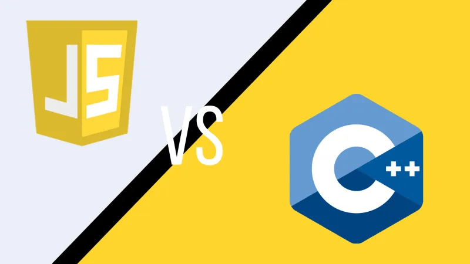
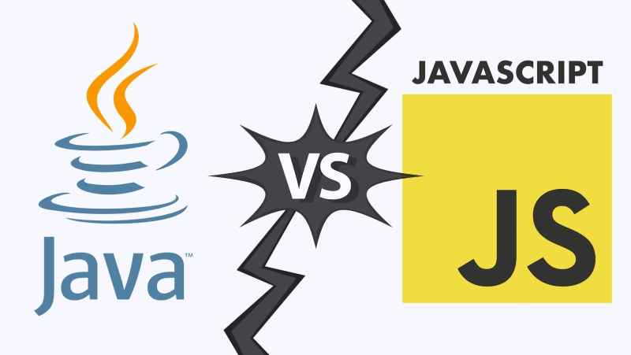

1. JavaScript với C

JavaScript và C C được compile (biên dịch) trước. Còn JavaScript được interpret (thông dịch) và đôi khi được
biên dịch trong thời gian chạy bằng just-in-time (JIT) compiler. C là static typing. Còn JavaScript là
dynamic typing. C yêu cầu lập trình viên phải cấp phát và lấy lại các khối bộ nhớ. JavaScript xử lý điều này
tự động. Code C phải được biên dịch lại khi chuyển sang một bộ xử lý khác. JavaScript thì không cần thiết. C
được thiết kế để hoạt động trực tiếp với bộ nhớ của máy tính thông qua các con trỏ. JavaScript thì không. C
thường được sử dụng cho các ứng dụng nhúng vào máy tính và các ứng dụng đòi hỏi hiệu suất cao như hệ điều
hành. Còn JavaScript chỉ được nhúng vào các trang web, nhưng nó đã tìm thấy vai trò mới trong các ứng dụng
phía máy chủ được phát triển bởi Node.js. C cung cấp khả năng kiểm soát rõ ràng các luồng, trong khi
JavaScript khuyến khích người dùng sắp xếp nhiều task bằng cách chia các tác vụ thành các hàm không đồng bộ
và được gọi khi dữ liệu đã sẵn sàng.
2. JavaScript với Java

Java được biên dịch thành một mã bytecode, một dạng trung gian được JIT compiler chạy. Còn JavaScript chỉ
được thông dịch tại một thời điểm nhưng hiện nay thường được chạy qua JIT compiler. Java là static typing.
Còn JavaScript là dynamic typing. Java là strong typing, trong khi JavaScript là weak typing. Java được
thiết kế để hỗ trợ các ứng dụng lớn với một namespace mạnh mẽ. JavaScript thì không cung cấp trực tiếp, nên
các lập trình viên khác đã tổng hợp nó. Java đã từng được sử dụng cho các trình duyệt và máy chủ nhưng phần
lớn đã bị giới hạn ở các máy chủ vào ngày nay. Còn JavaScript thì từng chỉ dùng cho các trình duyệt nhưng
giờ đây nó đang được sử dụng ngày càng nhiều ở phía máy chủ. Cả Java và JavaScript đều hỗ trợ nhiều ngôn ngữ
khác. Cross-compiler (trình biên dịch chéo) chuyển đổi nhiều ngôn ngữ để chạy trên các công cụ JVM của Java
hoặc các JavaScript engine. Java 8 hiện có bao gồm cơ chế nhúng JavaScript để Java có thể tận dụng một số
lợi ích của JavaScript. Java cho phép lập trình kiểm soát rõ ràng việc phân luồng. JavaScript che giấu phần
lớn điều này bằng cấu trúc hàm gọi và phản hồi của nó. Bạn có thể tham khảo các Java Jobs hấp dẫn dành cho
Developer nè
3. JavaScript với Python

JavaScript ban đầu được thiết kế để hỗ trợ các trang HTML trong trình duyệt. Python được tạo ra để code
những dòng lệnh hỗ trợ máy chủ (và máy tính để bàn). Cả hai ngôn ngữ đều đang hỗ trợ các cộng đồng lập trình
khác lớn hơn. Python phổ biến như một ngôn ngữ xử lý dữ liệu trong khoa học máy tính. JavaScript hiện được
dùng trên các máy chủ và nhiều mục đích khác. JavaScript sử dụng dấu ngoặc nhọn để phân định các đoạn code.
Python sử dụng thụt lề và khoảng trắng. Python cung cấp các khối tham số linh hoạt cho các phương thức,
trong khi JavaScript khẳng định rằng tất cả các tham số phải được chỉ định. Code JavaScript thường được kích
hoạt bởi các sự kiện như nhấp chuột hoặc nhấn phím. Python phản hồi các lệnh gọi hàm. Nhiều thư viện Python
tập trung vào xử lý và phân tích dữ liệu, trong khi nhiều thư viện JavaScript được thiết kế để thao tác với
HTML trong trình duyệt.
4. Kết
Hy vọng những thông tin trên sẽ giúp anh em hiểu được phần nào về JavaScript. Và chọn được con đường phù
hợp. Nếu trong bài có gì thiếu sót mong anh em hãy comment để mình cải thiện chất lượng bài. Cảm ơn mọi
người đã đọc.